Chapter 20: Delightful UX — Layout¶
With the functionality completed and your app working so well, it’s time to make the UI look and feel delightful. Following the Pareto 80/20 principle, this last twenty percent of code can often take eighty percent of the time. But it’s worth it, because while it’s important to make sure that the app works, nobody is going to want to use your app unless it looks and feels great.
The starter app¶
There are a few changes to the project since the challenge project in the last chapter. These are the major changes:
- To prevent huge, monolithic views, it’s a good idea to refactor often.
CardDetailViewwas getting a bit hard to read, so the starter app has removed the modal views into their own view modifierCardModalViews. - The asset catalog has more pleasing random colors to use for backgrounds, as well as other colors that you’ll use in these last chapters.
-
ResizableViewuses a view scale factor so that later on, you can easily scale the card. The default scale is 1, so you won’t notice it to start with. -
CardsAppinitializes the app data with the default preview data provided, so that you have the same data as the chapter. Remember to change to@StateObject var store = CardStore()in CardsApp.swift when you want to start saving your own cards again. - Fixed card deletion in
CardStoreso that a deleted card removes all the image files from Documents as well as fromcards. CardDrophassizeandframeproperties that you’ll use in the Challenge.
This is the view hierarchy of the app you’ve created so far.
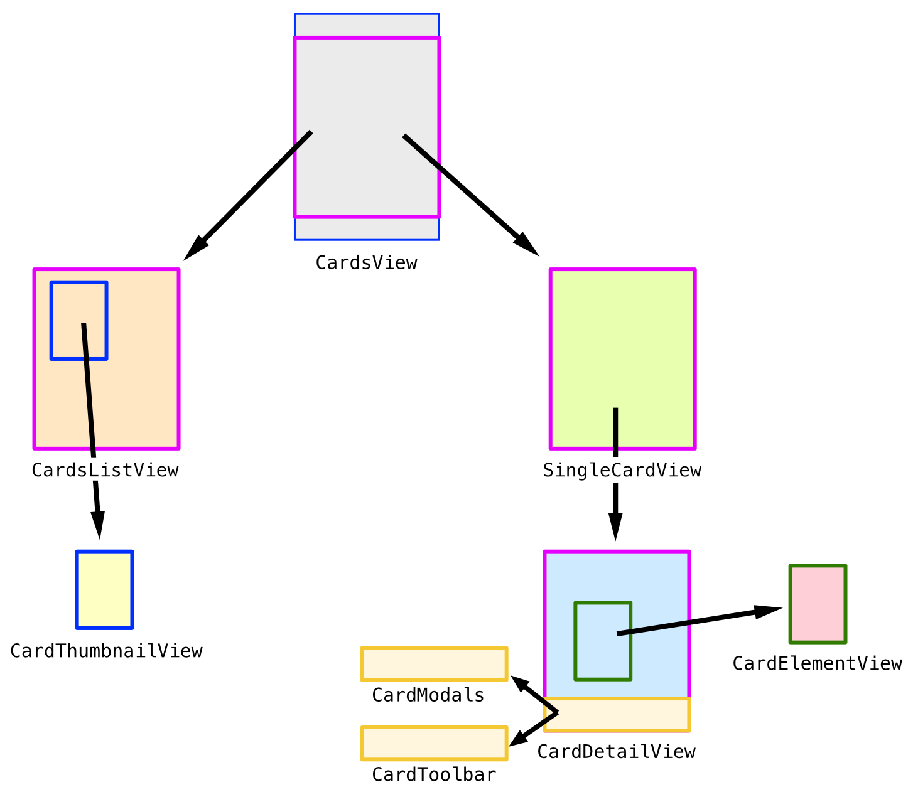
As you can see, it’s very modular. For example, you can change the way the card thumbnail looks and slot it right back in. You can easily add buttons to the toolbar and add a corresponding modal.
You instantiate the one single source of truth — CardStore — and pass it down through all these views through bindings.
Designing the cards list¶
The designer of this app has suggested this design for Light and Dark Modes:
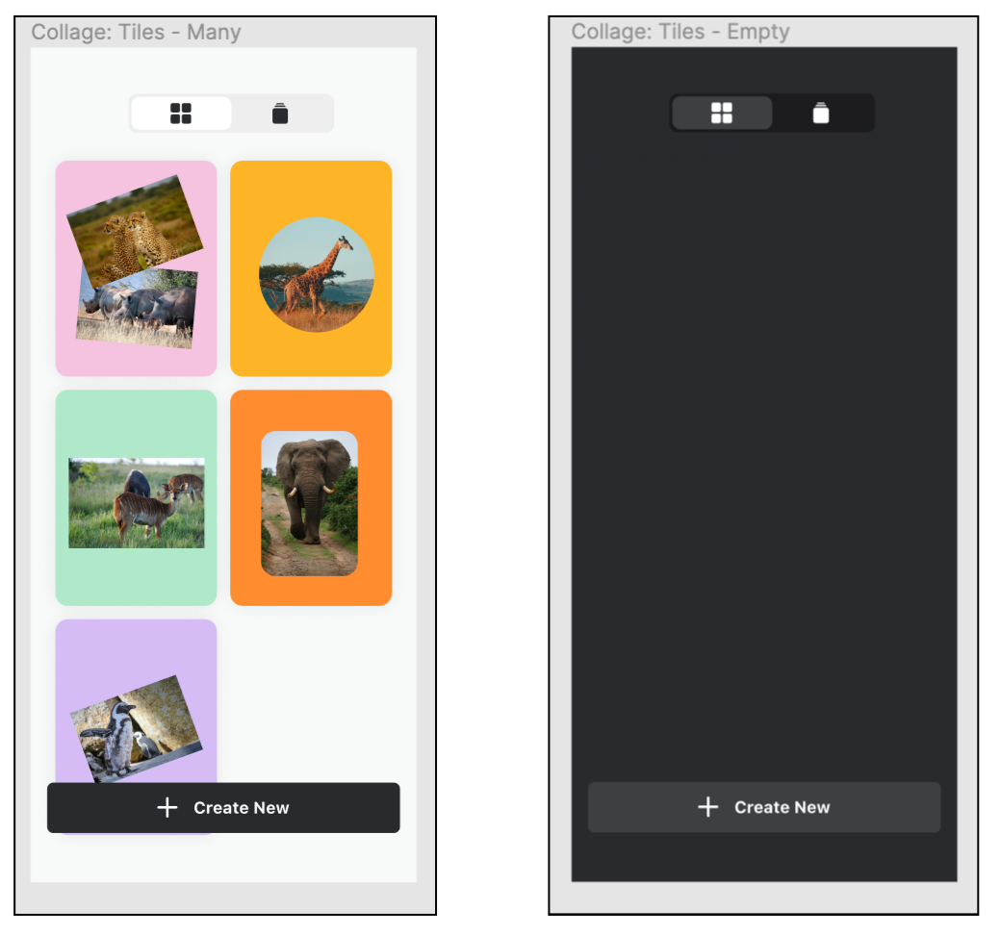
The top segmented controller will swap the display between a grid list view and a carousel. The bottom button is wide. This is the design that you’ll attempt to duplicate.
Adding the list background color¶
➤ Before adding anything to the project, build and run the app in Simulator and choose Device ▸ Erase All Contents and Settings….
This will delete all the data you have so far created for the app. For the moment, you’ll use the default data provided with the app.
➤ Open CardsView.swift.
➤ Add a modifier to ZStack:
.background(
Color("background")
.edgesIgnoringSafeArea(.all))
This will use a color from the asset catalog named background for the background color. This is defined as light gray for light appearance and dark gray for dark appearance. By using edgesIgnoringSafeArea(_:), you ensure the background covers all the screen.
➤ Preview the view. In this image, the background color is pink for clarity; yours will be light gray.
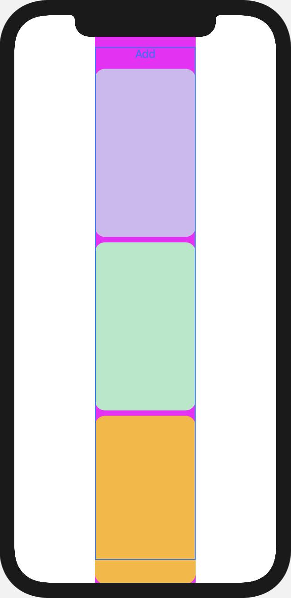
Instead of the background color showing across the whole view, even though you’re ignoring all the safe areas, the background color is only showing up in the area of the scroll view. This is because ZStack only takes up as much space as required by its child views.
Layout¶
Skills you’ll learn in this section: control view layout
It’s time to take a deeper look at how SwiftUI handles view layout.Most of the time, SwiftUI views lay themselves out and look great, and you don’t have to think about the layout at all. But then comes the time where you want exact positioning, or a view isn’t behaving the way that you thought it would, and you might start fighting the system. Once you understand layout and treat it logically, then it all becomes much easier.
Layout starts from the top of the view hierarchy. The parent view tells its children, “I propose this size”. Each child then takes as much room as it needs within the parent’s available space and tells the parent “I only need this size”. This continues all the way down the view hierarchy. The parent then resizes itself to the size of its child views.
➤ Create a new SwiftUI View file named LayoutView.swift to experiment with various layouts. If you still have ContentView.swift in your file, you can use that instead.
➤ In LayoutView_Previews, add a new modifier to LayoutView:
.previewLayout(.fixed(width: 500, height: 300))
This gives a fixed size to the preview of 500 x 300.
➤ In LayoutView, add a new modifier to Text:
.background(Color.red)
➤ Preview the view. The red color shows how much space the Text view takes up on screen.
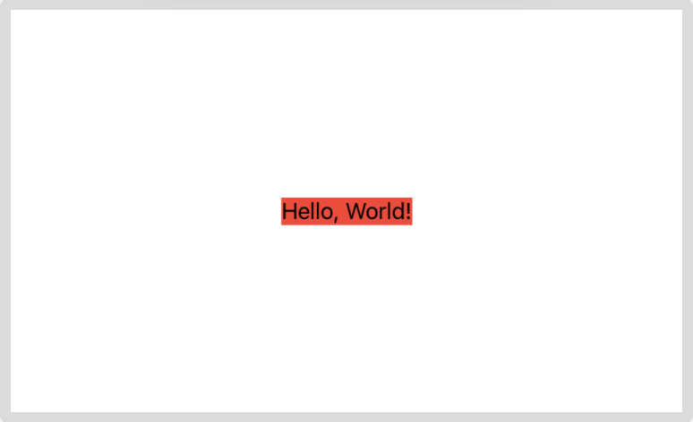
There are three views in the view tree hierarchy here:
LayoutView ➤ Text (modified) ➤ Red
LayoutView has a fixed size of 500 by 300 points. Text takes up the amount of space needed for the letters in the assigned font size. Color is a bit different. It’s a late binding token, which means that the size is assigned at the last moment.
A Color view fills the whole space of its parent.
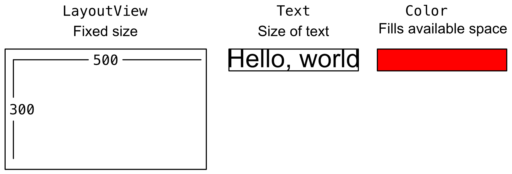
➤ Change LayoutView to:
struct LayoutView: View {
var body: some View {
HStack {
Text("Hello, World!")
.background(Color.red)
Text("Hello, World!")
.padding()
.background(Color.red)
}
.background(Color.gray)
}
}
➤ Here you create a horizontal stack with two Text views. The second Text has padding.
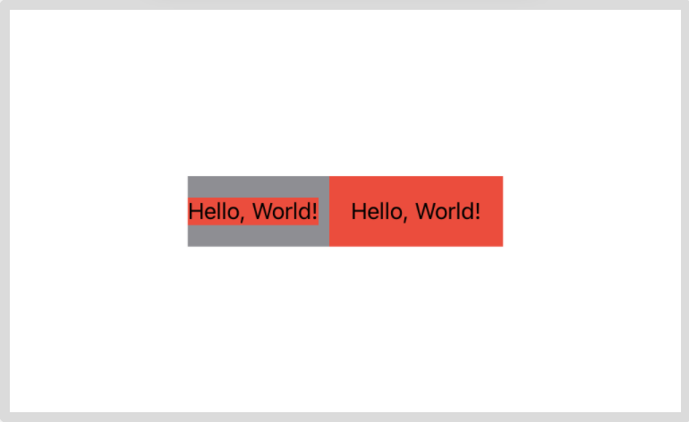
The view tree is now:
LayoutView ➤ HStack ➤ Text (modified) ➤ Red
➤ Text (modified) ➤ Padding (modified) ➤ Red
➤ Gray
LayoutView still has the fixed size of 500 by 300 points. HStack presents 500 by 300 points to its children. The first Text returns the space it needs, but the second text has a padding modifier, so returns its space plus the padding. HStack then takes up only the space required by its two child views plus HStack’s default padding between the two child views. HStack’s gray background color fills out the space taken up by HStack underneath the two Text views.
Every time you add a modifier, you create a new layer in the view hierarchy. But don’t worry about the efficiency of this — SwiftUI views are lightweight and adding new views is incredibly fast.
The frame modifier¶
In previous code, you have changed the default size of views using frame(width:height:alignment:), giving absolute values to width and height.
When you want to lay out views relative to parent view sizes, you can specify minimum and maximum widths and heights using frame(minWidth:idealWidth:maxWidth:minHeight:idealHeight:maxHeight:alignment:).
➤ Before .background(Color.gray), add this:
.frame(maxWidth: .infinity)
The HStack now tells its parent that it wants the maximum available width, so HStack, with its gray color, expands to the whole width of the view.
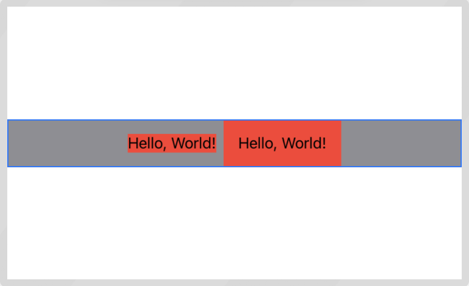
Remember your earlier problem with the background color only taking up the width of the ScrollView? Specifying a frame with maxWidth and maxHeight of infinity would be one way of filling up the entire available background.
GeometryReader¶
Skills you’ll learn in this section: GeometryReader; use given view size to layout child views
However, when you need to know the size of the parent so that you can lay out child views with more precision, there’s another flexible view that takes up the whole available space and gives you the size in points. GeometryReader is a container view that returns its preferred size. Later, you’ll use GeometryReader to determine the size of card thumbnails based upon the width of the available space.
➤ In LayoutView, embed HStack in a GeometryReader and give it a yellow background:
GeometryReader { proxy in
HStack {
...
}
.frame(maxWidth: .infinity)
.background(Color.gray)
}
.background(Color.yellow)
GeometryReader takes up the size of the parent, in this case the whole 500 x 300 point view. It returns a value of type GeometryProxy, which includes a size property so that you can find out exactly the size of the view. You can then lay out child views using this size.
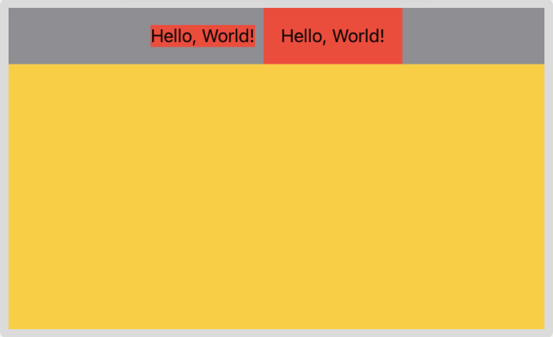
Notice that GeometryReader changes alignment behavior. Instead of HStack being centered in its parent view, it is now aligned to the top left of its parent view. You’ll discover more about alignment later in this chapter.
➤ Change HStack’s modifiers to:
.frame(width: proxy.size.width * 0.8)
.background(Color.gray)
.padding(
.leading, (proxy.size.width - proxy.size.width * 0.8) / 2)
frame(width:height:alignment) now uses a relative value of four fifths of the width of the available area. If the parent view gets larger, for example on device rotation, proxy.size will update and refresh the view. The view will resize to four fifths of the new parent size.
To center HStack, you calculate the leading padding, using the geometry proxy width.
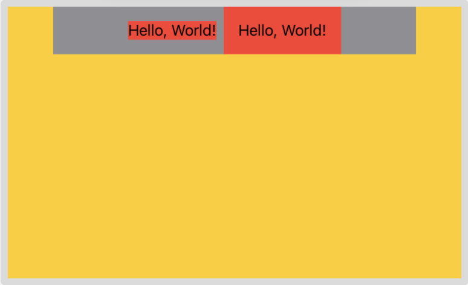
Notice the order of the modifiers. If you change the order of any one of these, you’ll get a different result. Before filling with color, you must set the size of the view. If you calculate the padding before filling with gray, then you’ll center the text views but not the background gray color.
Setting the card thumbnail size¶
When showing a list of card thumbnails on an iPad, you have more room than on a smaller device, so the thumbnail size should be larger. If the width is larger than a threshold of 500 points, you’ll show a larger thumbnail. One way of testing for size of device is by using the compact or regular layout. Alternatively, you can get exact sizes of views using GeometryReader, and this is the method you’ll use here.
➤ Open CardsListView.swift.
➤ Embed ScrollView in GeometryReader:
GeometryReader { proxy in
ScrollView(showsIndicators: false) {
...
}
}
➤ Open CardsView.swift and preview.
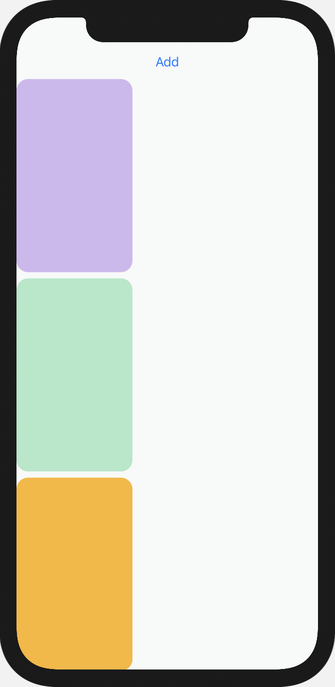
Notice the side effects of using GeometryReader. CardsListView’s parent is ZStack in CardsView.swift. GeometryReader takes all the available space and passes that back to ZStack. That means that ZStack’s light gray background color now fills the entire screen.
The second side effect is that the central alignment of ScrollView is lost. You’ll fix this when you add a grid view shortly.
➤ Open CardsListView.swift again.
Within ScrollView, you now have access to proxy.size which gives you the entire available space of CardsListView’s parent.
➤ Change CardThumbnailView(card: card) to:
CardThumbnailView(card: card, size: proxy.size)
You now pass the size to the thumbnail, which can take appropriate action. You’ll get a compile error until you fix CardThumbnailView.
➤ Open CardThumbnailView.swift.
➤ Add the size after the card property:
var size: CGSize = .zero
➤ Open Settings.swift and replace thumbnailSize with:
static func thumbnailSize(size: CGSize) -> CGSize {
let threshold: CGFloat = 500
var scale: CGFloat = 0.12
if size.width > threshold && size.height > threshold {
scale = 0.2
}
return CGSize(
width: Settings.cardSize.width * scale,
height: Settings.cardSize.height * scale)
}
The thumbnail size will scale to 12 percent of the final size of the card. When the size offered has a width or height greater than 500 points, then you scale to 20 percent of the final size.
➤ In CardThumbnailView.swift, replace frame(width:height:) with:
.frame(
width: Settings.thumbnailSize(size: size).width,
height: Settings.thumbnailSize(size: size).height)
Now that you know the screen space available to the card list, you calculate the thumbnail’s frame accordingly.
➤ Build and run on both iPad and iPhone simulators and compare the two thumbnail sizes.

The thumbnail size on the iPad is larger than that on the iPhone.
Adding a lazy grid view¶
Skills you’ll learn in this section: GeometryProxy size calculations
Instead of showing one column of scrolling cards, you’ll add a LazyVGrid to show the cards in multiple columns. This should be adaptive depending on the device’s current display width.
➤ Open CardsListView.swift and add a new method to CardsListView:
func columns(size: CGSize) -> [GridItem] {
[
GridItem(.adaptive(
minimum: Settings.thumbnailSize(size: size).width))
]
}
This returns an array of GridItem — in this case, with one element — you can use this to tell the LazyVGrid the size and position of each row. This GridItem is adaptive, which means the grid will fit as many items as possible with the minimum size provided.
➤ In body, embed ForEach in a LazyVGrid:
GeometryReader { proxy in
ScrollView(showsIndicators: false) {
LazyVGrid(columns: columns(size: proxy.size), spacing: 30) {
ForEach(store.cards) { card in
...
}
}
}
}
You now have a flexible grid with vertical spacing of 30 points.
➤ Build and run the app on various simulators and switch from portrait to landscape to see how the columns vary.
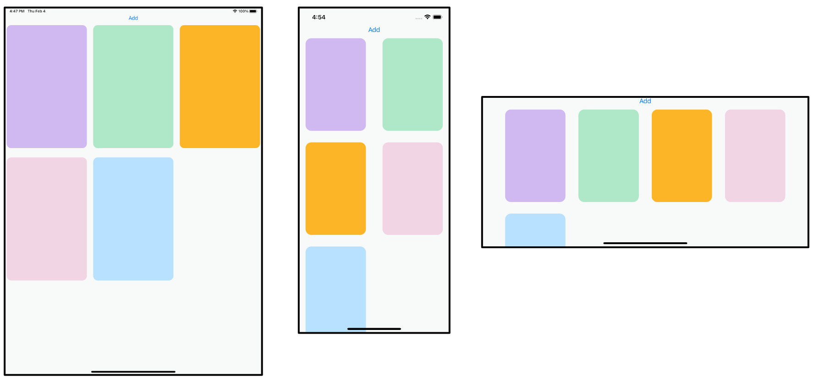
Note: If you want to visualize how much space views take up, try adding .background(Color.red) as a modifier to the various views.
Creating the button for a new card¶
You’ll now place a button at the foot of the screen to create a new card.
➤ Open CardsView.swift.
➤ In CardsView, remove VStack and its contents, so that ZStack only contains SingleCardView and its conditional:
ZStack {
if !viewState.showAllCards {
SingleCardView()
}
}
.background...
➤ In CardsView, create a new button property:
var createButton: some View {
// 1
Button(action: {
viewState.selectedCard = store.addCard()
viewState.showAllCards = false
}) {
Label("Create New", systemImage: "plus")
}
.font(.system(size: 16, weight: .bold))
// 2
.frame(maxWidth: .infinity)
.padding([.top, .bottom], 10)
// 3
.background(Color("barColor"))
}
You don’t always have to create new structures for views. Sometimes, if it’s a simple view and you’re only using it once, it’s easier to keep track of views as properties or methods.
Going through this code:
- Create a simple button using a
Labelformat, so that you can specify a system image. When tapped, you create a new card and assign it toviewState.selectedCard. You setviewState.showAllCardstofalse, so thatSingleCardViewwill show. - The button stretches all the way across the screen, less the padding.
- The background color is in the asset catalog. You’ll customize the button text color shortly.
You’ll add the button as another layer on top of CardsListView.
➤ At the top of ZStack, add this code:
CardsListView()
VStack {
Spacer()
createButton
}
VStack and Spacer will place the button at the bottom of the screen.
CardsView now looks like this:
ZStack {
CardsListView()
VStack {
Spacer()
createButton
}
if !viewState.showAllCards ...
}
➤ Build and run (or use Live Preview) and test out your new button.

The button code has a “gotcha”. Although the button frame extends all the way across the screen, only the text is tappable.
➤ In createButton, move frame(maxWidth: .infinity) from being a modifier on Button to a modifier on Label:
Button(action: {
...
}) {
Label("Create New", systemImage: "plus")
.frame(maxWidth: .infinity)
}
...
➤ Build and run again. The button looks the same but is tappable all the way across.
Outlining the cards¶
Open CardThumbnailView.swift.
An alternative to using a RoundedRectangle is to use the card background color as the view.
➤ Change RoundedRectangle(cornerRadius:) and foregroundColor(_:) to:
card.backgroundColor
.cornerRadius(10)
This changes the corner radius to match the design, but otherwise produces the same result as before.
➤ Add a modifier to card.background, after frame(width:height:alignment:):
.shadow(
color: Color("shadow-color"),
radius: 3,
x: 0.0,
y: 0.0)
Here you add a shadow with your specified color and a radius of 3. With the x and y positions both being zero, the shadow will be three points all around the view.
This is a very subtle outline color, but if your designer tells you to add it, trust the designer. :]
➤ Temporarily change card.backgroundColor to:
Color(UIColor.systemBackground)
As the card color is now the same as the screen’s background color you’ll be able to see the shadow.
➤ Preview the view, switching between Dark and Light color schemes in Inspect Preview.
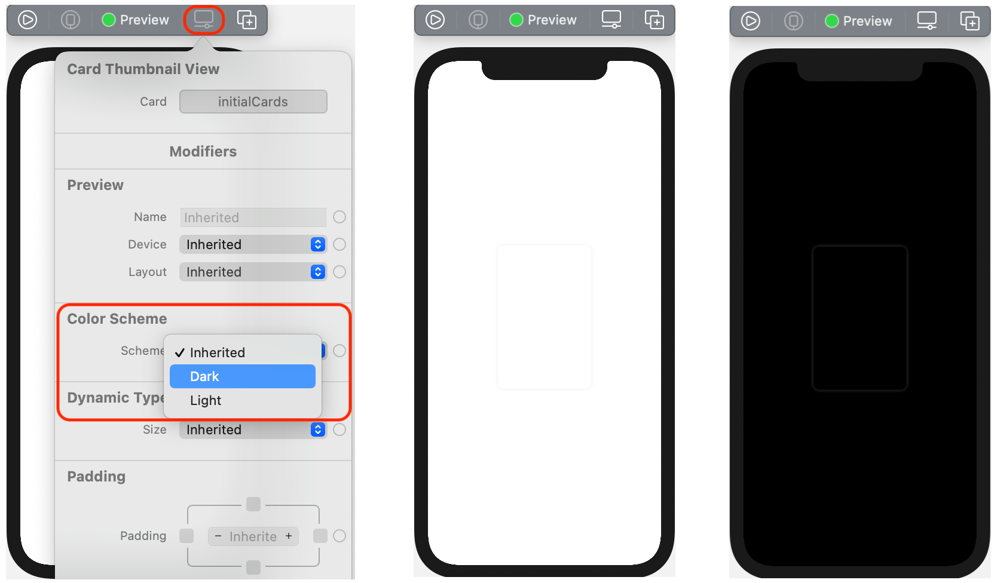
➤ Change Color(UIColor.systemBackground) back to:
card.backgroundColor
This restores your card’s background color.
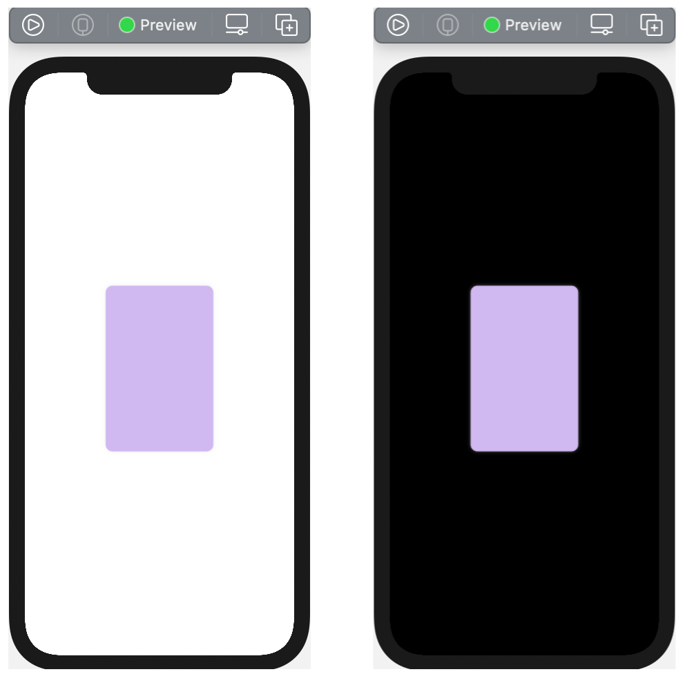
Designing the card detail screen¶
Skills you’ll learn in this section: accent color; scale a fixed size view
Customizing the accent color¶
The app’s accent color determines the default color of the text on app controls. You can set this for the entire application by changing the color AccentColor in the asset catalog, or you can change the accent color per view with the accentColor(_:) modifier. The default is blue, which doesn’t work at all well for the text button:
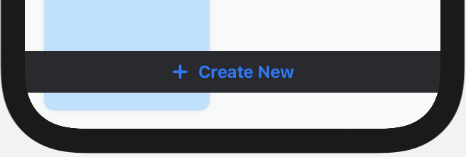
➤ Open Assets.xcassets and choose AccentColor.
AccentColor is automatically created when you create a new project using the App template.
➤ Change the color to black for Any Appearance and white for Dark Appearance.
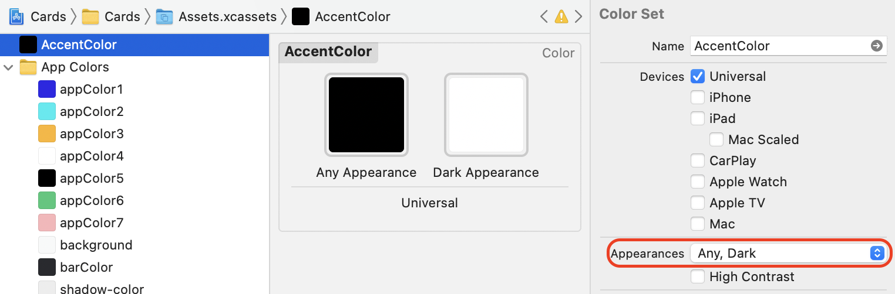
This will change the default accent color of all the controls throughout the app.
➤ Open CardsView.swift and preview it.
The Create button text is now black and doesn’t show on the black bar.
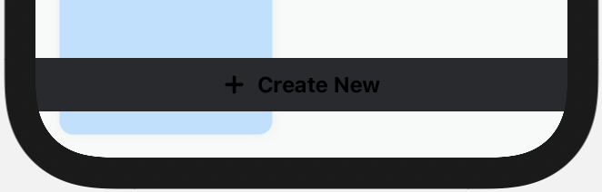
➤ In createButton, add a new modifier after background(Color("barColor"):
.accentColor(.white)
As the button is dark in both light and dark appearances, you set the button’s accent color to always be white.
➤ Live preview the view in both Light and Dark color schemes:
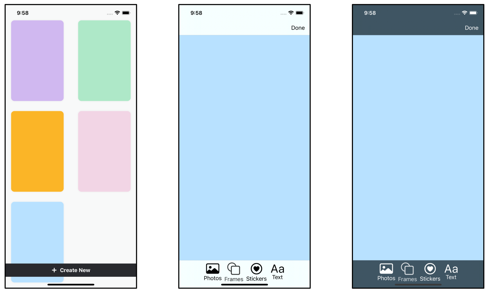
Throughout the app, text takes on AccentColor in Assets.xcassets except for where you specify accentColor(_:) on specific views.
Scaling the card to fit the device¶
Currently a card takes up the full size of the screen, no matter what device or orientation you’re using. This obviously doesn’t work when you’ve created a portrait card and then turn the device to landscape.
You’re going to create cards with a fixed size of 1300 by 2000. The entire card will be visible at one time, no matter the orientation, and you’ll calculate the appropriate size of the card view using a geometry reader proxy size.
➤ Open CardDetailView.swift.
➤ Add these new methods to CardDetailView:
func calculateSize(_ size: CGSize) -> CGSize {
var newSize = size
let ratio =
Settings.cardSize.width / Settings.cardSize.height
if size.width < size.height {
newSize.height = min(size.height, newSize.width / ratio)
newSize.width = min(size.width, newSize.height * ratio)
} else {
newSize.width = min(size.width, newSize.height * ratio)
newSize.height = min(size.height, newSize.width / ratio)
}
return newSize
}
func calculateScale(_ size: CGSize) -> CGFloat {
let newSize = calculateSize(size)
return newSize.width / Settings.cardSize.width
}
These methods calculate the size and scale of the card view with the correct aspect ratio using a given size. This size will come from a GeometryReader’s GeometryProxy.
➤ In body, embed content in a GeometryReader:
var body: some View {
GeometryReader { proxy in
content
.onChange(of: scenePhase) ...
You can now calculate the frame of content using the geometry reader proxy size.
➤ Add these modifiers to content after cardModals(card:currentModal:):
// 1
.frame(
width: calculateSize(proxy.size).width ,
height: calculateSize(proxy.size).height)
// 2
.clipped()
// 3
.frame(maxWidth: .infinity, maxHeight: .infinity)
There’s a lot of layout going on in these few modifiers:
- Calculate the size of the card view given the available space.
- The background color will spill out of the frame, so clip it.
- Make sure that
contenttakes up all of the space available to it. This will center the card view in the geometry reader.
➤ In the Views group, open ResizableView.swift.
Notice that the new changes in this file adjust all the offsets and sizes to be scaled to viewScale. This defaults to 1, so you don’t have to specify a view scale if you don’t want to.
➤ Open CardDetailView.swift again.
➤ In var content, change resizableView(transform: bindingTransform(for: element)) to:
.resizableView(
transform: bindingTransform(for: element),
viewScale: calculateScale(size))
When ResizableView transforms the size of each element, it now uses the scale calculated using the proxy size.
Unfortunately your app fails to compile, because proxy’s size isn’t available to content.
➤ Change var content: some View { to:
func content(size: CGSize) -> some View {
This changes content to be a method instead of a property, so that you can pass the geometry proxy size.
➤ In body, change content to:
content(size: proxy.size)
➤ Build and run on various devices and orientations and check out your newly scaled card view. The card stays in portrait and is fixed to a scaled 1300 by 2000 size.
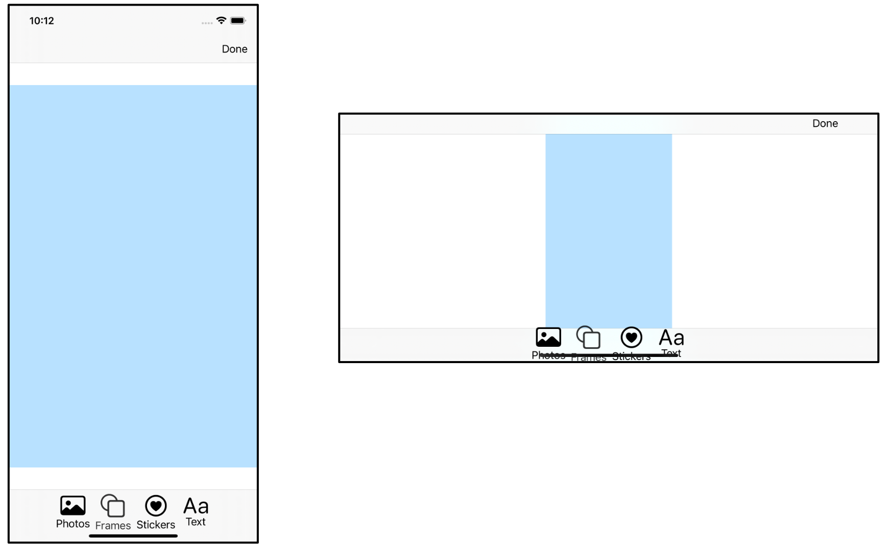
Unfortunately, now you have a new problem! When you add a photo, because the card is scaled, it’s too small to manage.
➤ Open Settings.swift and change defaultElementSize to:
static let defaultElementSize =
CGSize(width: 800, height: 800)
➤ Build and run, and now you can add elements that are appropriate to the size of the device.
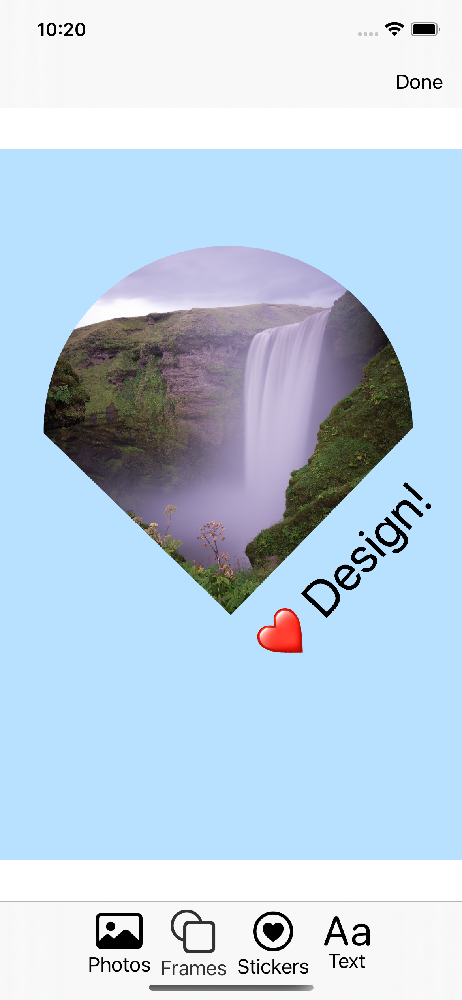
Alignment¶
Skills you’ll learn in this section: stack alignment
The final subject in layout that you’ll cover is alignment. Take another look at the previous image. Currently, the images in your toolbar buttons are different sizes which misaligns the button text. Your attention-to-detail gene should have been crying inwardly because of this.
VStack(alignment:spacing:) and HStack(alignment:spacing:) have optional alignment parameters.
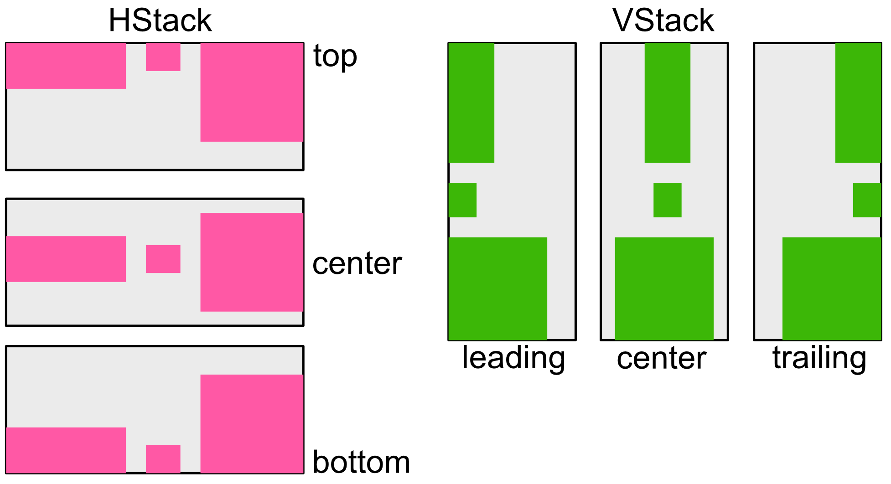
With an HStack, you describe how child views should align vertically, and with a VStack, you describe the horizontal view alignment
➤ Open CardBottomToolbar.swift and preview the view.
Xcode Tip: Don’t forget your keyboard shortcut Shift-Command-O to quickly open a file by name. To see the current file in the Project navigator, press Shift-Command-J.
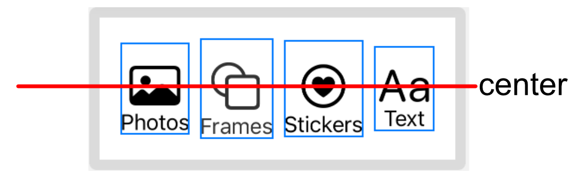
Currently, in CardBottomToolbar, your toolbar buttons are in a center aligned HStack. This means that the ToolbarButtonViews, which consist of a VStack with an Image above and Text below, are all center aligned.
➤ In CardBottomToolbar, change HStack { to:
HStack(alignment: .top) {
This aligns the buttons at the top of the HStack.
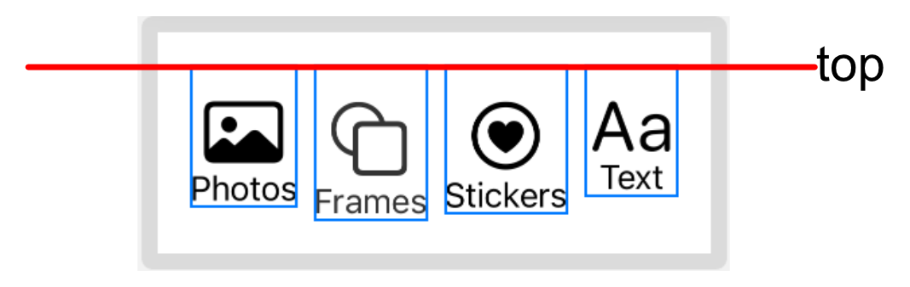
➤ Now try bottom alignment. Change the alignment to:
HStack(alignment: .bottom) {
This is the best result as all the text is now aligned.
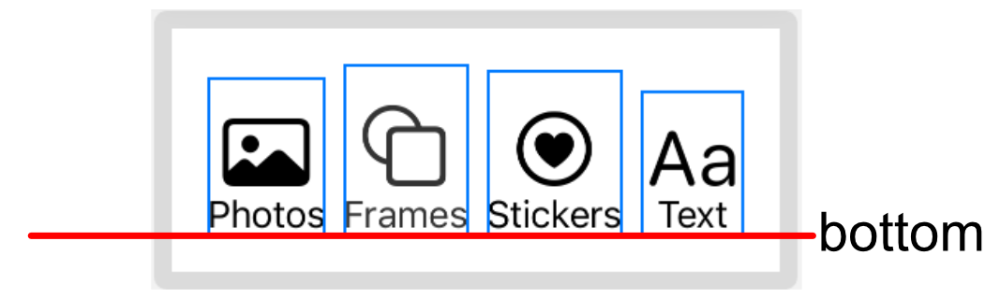
When you build and run the app on an iPhone and rotate to landscape, you will see that the images escape over the top of the bar and the home bar covers the text.
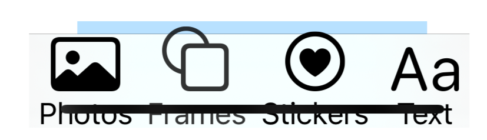
In Chapter 16, “Adding Assets to Your App”, you used size classes for compact and regular to determine which launch image to use. Here, you’ll check the size class of the device in code and use a different view for each size class. The compact size class will only show the image, whereas the regular size class will show both image and text.
➤ Still in CardBottomToolbar.swift, in ToolbarButtonView, add this:
func regularView(
_ imageName: String,
_ text: String
) -> some View {
VStack(spacing: 2) {
Image(systemName: imageName)
Text(text)
}
.frame(minWidth: 60)
.padding(.top, 5)
}
This is the regular size class view that shows both image and text.
➤ Add this method:
func compactView(_ imageName: String) -> some View {
VStack(spacing: 2) {
Image(systemName: imageName)
}
.frame(minWidth: 60)
.padding(.top, 5)
}
This is the compact size class view that shows only the image.
➤ Add a new environment property to ToolbarButtonView:
@Environment(\.verticalSizeClass) var verticalSizeClass
This system environment property holds whether the vertical size class is currently compact or regular.
➤ Replace body with:
var body: some View {
if let text = modalButton[modal]?.text,
let imageName = modalButton[modal]?.imageName {
if verticalSizeClass == .compact {
compactView(imageName)
} else {
regularView(imageName, text)
}
}
}
This will show the correct view for the correct size class.
➤ Build and run the app on an iPhone simulator and open a card. When you rotate the simulator, both text and images show in portrait but only the images show in landscape.
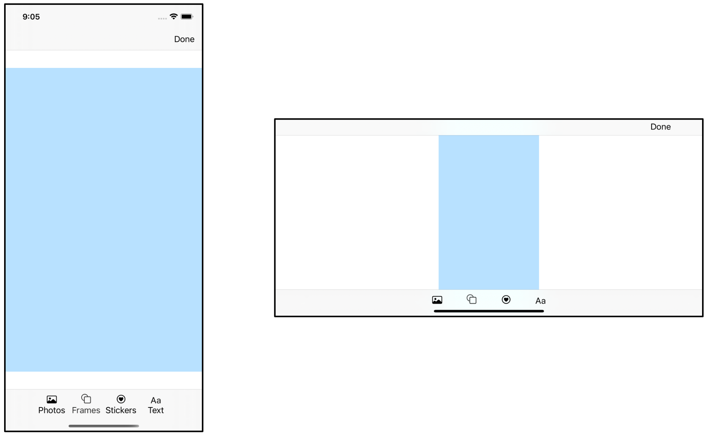
Challenge¶
In Chapter 17, “Interfacing With UIKit”, you implemented drag and drop. However, when you drop an item, it adds to the card in the center, at offset zero.
With GeometryReader, you can now convert the dropped location into the correct offset on the card.
CardDrop, the drop delegate, now takes in asizeand aframe. InCardDetailView’sbody, change.onDrop(of:delegate:)so thatCardDropreceives the calculated size of the card and the frame in global coordinates. That’sproxy.frame(in: .global).- In
CardDrop, examine theDispatch.main.asyncclosure.offsetis calculated for you, usinginfo.location. The drop delegate provides this drop location.calculateOffsetdoes various calculations between coordinate spaces.
To illustrate what a coordinate space is, all card offsets are saved with the origin being at the center of the card. The origin is location (0, 0). However, info.location is in screen coordinates, where the origin is at the top left of the screen. So you must convert from “screen space” to “card space”.
If you need a reminder on how to do drag and drop, take another look at Chapter 17, “Interfacing With UIKit”.
Try out drag and drop on iPad, and you have an infinite number of Google images to decorate your card.
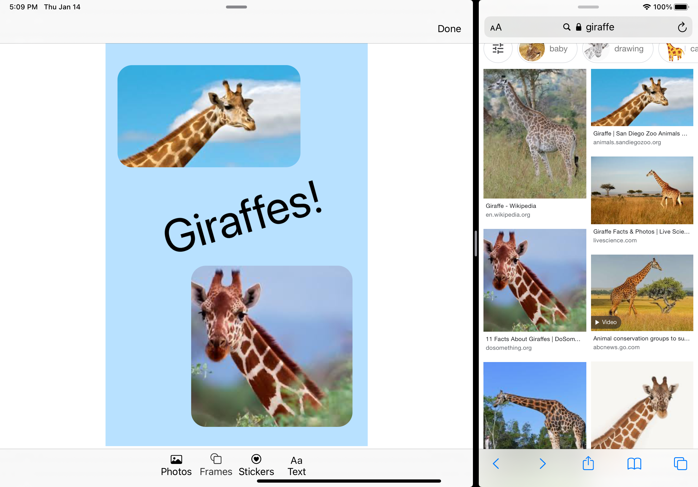
Key points¶
- Even though your app works, you’re not finished until your app is fun to use. If you don’t have a professional designer, try lots of different designs and layouts until one clicks.
- Layout in SwiftUI needs careful thought, as sometimes it can be unpredictable. The golden rule is that views take their size from their children.
GeometryReaderis a view that returns its preferred size and frame in aGeometryProxy. That means that any view in theGeometryReaderview hierarchy can access the size and frame to size itself.- Stacks have alignment capabilities. If these aren’t enough, you can create your own custom alignments too. There’s a great Apple WWDC video that goes into SwiftUI’s layout system in depth at: https://apple.co/39uamSx